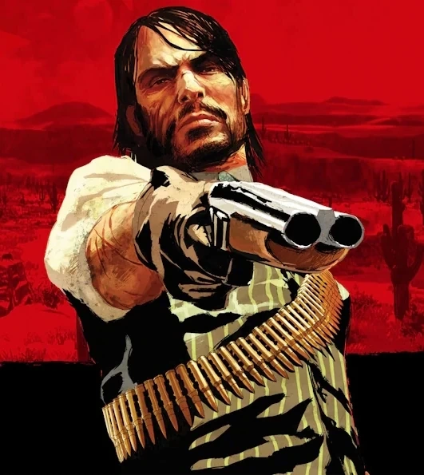

John Marston nasceu em 1873 e foi criado em um ambiente violento e negligente, o que o levou a se envolver com a gangue de Dutch van der Linde ainda jovem. Ao longo dos anos, ele se tornou impulsivo e leal à gangue, mas sempre com um forte senso de honra, apesar de seus erros. Após a queda da gangue, John tenta se redimir, buscando uma vida tranquila com sua esposa Abigail e seu filho Jack, longe da criminalidade. No entanto, o passado de John o persegue, e ele é forçado a retornar ao crime para proteger sua família. A busca por redenção é uma constante em sua vida, e ele tenta corrigir seus erros enquanto protege os que ama. No final de Red Dead Redemption 2, John finalmente consegue escapar do ciclo de violência, mas sua morte ocorre no primeiro Red Dead Redemption quando ele é traído pelo governo e, ao tentar proteger sua família, morre em uma emboscada após uma última tentativa de resgatar o que restou de sua vida.